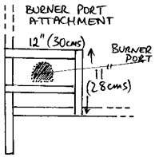

Kiln Materials (Lid):
Lid
A frame of angle iron must be made, with holes for the steel rods.. The calcium-silicate sheet is laid into the frame, preferably before it is all welded up. On this the medium-high temperature insulation fiber is placed. The bricks are then laid in their 3" side and cut to fit into the frame. While you are doing this row by row, the threaded steel rods should be drilled thorough the bricks, so that they eventually meet the right opening at the other end. The inner 7 x 3 rows of bricks are only partly or not at all cut, so that they jut out and will fit snugly into the kiln body, sealing it. This will require cutting some bricks only partly. The edge should be beveled, as should the header row, so that the lid may ease into the body easily (see image). On completion, nuts should be screwed onto the threaded rods and the handles welded on firmly. The lid is the main weakness of this design, as it requires two people to lift it. If you are resourceful, you can construct some sort of pulley or other construction to lift the lid of the kiln. 
Burner Port Attachment
This small construction (see image) lets you slide a piece of custom cut kiln shelf in and out, closing and opening the burner port as required. It also provides a hold for a burner clamp to be welded on to.
Flue
The bottom is laid out with the smaller calcium-silicate sheet, as with the body. On this the outer low temp. bricks are stacked up, fitting them snugly into the frame. The inner high temp. bricks are laid upright on the left and right sides of the flue and on their side at the back. In the upper half of the flue, all bricks may be of the low temp. sort, as this area doesn't get so hot. The flue is flush with the kiln body - no chimney is necessary and it reduces well. Instead of a damper, a piece of brick can be placed over the flue for reduction. This works very well.
I am aware that this design is not complete and requires some improvisation kills, e.g. getting bricks to fit nicely - but this is actually the case with all self-built kilns anyway. If you are trying to build this kiln and get stuck, or have any other questions,please do e-mail me.
DIY Fast Firing Kiln Design - Part I
DIY Fast Firing Kiln Design - Part III